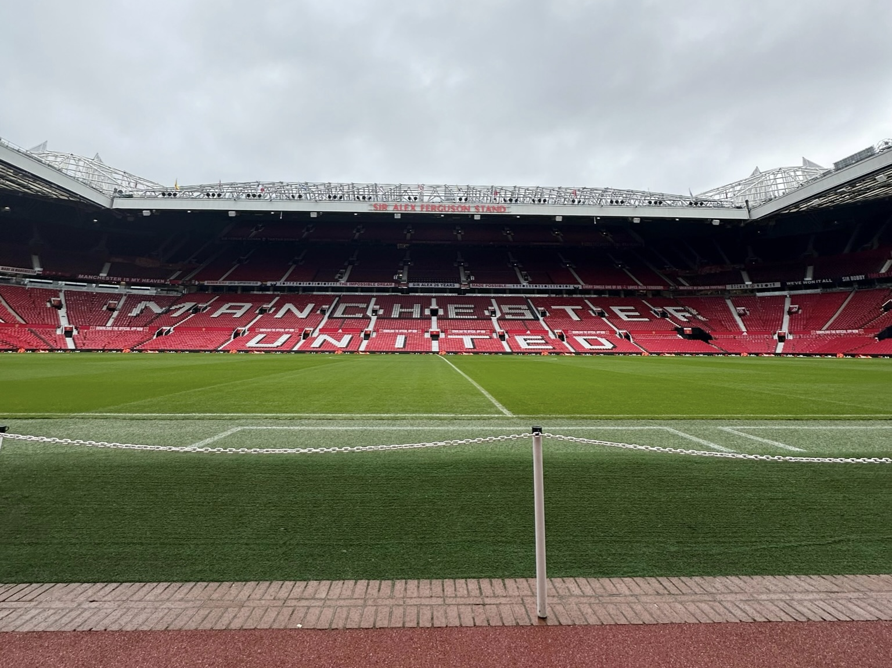

Efteråret 2022 var jeg afsted i Manchester for at se Manchester United spille fodboldkamp imod West Ham United. Jeg var afsted sammen med min familie, og vi havde en virkelig fed tur, blandt andet fordi vi havde booket turen igennem ManchesterTourPåBudget.dk. Stadiontour Noget af det fedeste på turen var da vi var på stadion tour, hvor vi både hørte en masse historier om stedet, så omklædningsrummet, gik igennem både den gamle og den nye spillertunnel og meget mere, det var virkelig fedt, og helt klar noget jeg kan anbefale, og turen sluttede selvfølgelig i fan. Shoppen hvor jeg købte en hjemmebane trøje med Højlund på ryggen.

Kampen Så skulle vi endelig se noget fodbold, og der var så god stemning på stadionet, både inde på stadionet og ude foran, og så gik kampen i gang, efter næsten 38 minutter scorer United, hvilket giver en ekstra god stemning og alle kommer i godt humør,og eftersom de også vandt var vi alle glade, og skulle selvfølgelig fejre det med en øl på en pub. Anbefaling Jeg vil helt klart anbefale at bruge ManchesterTourPåBudget.dk, de havde styr på både hotel, fly, billetter osv, det var rart at kunne slappe af. Denne tur kunne jeg sagtens tage på en anden gang.